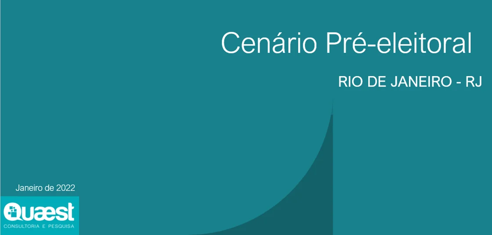

Cenário pré-eleitoral no Rio de Janeiro
Pesquisa qualitativa sobre avaliação de governo e imagem de pré-candidatos ao Executivo estadual.
34 grupos focaisQuaest Consultoria e Pesquisa
Detalhes do projeto
34 grupos focais online com 272 moradores da capital, da Baixada e do interior fluminense. Os grupos discutiram a conjuntura estadual e a eleição presidencial e avaliaram materiais audiovisuais de pré-candidatos.